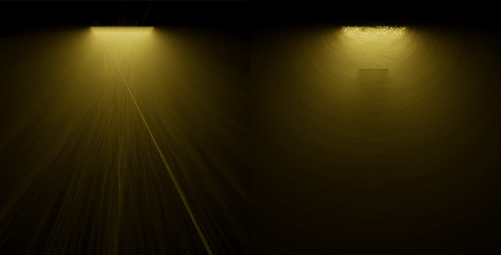
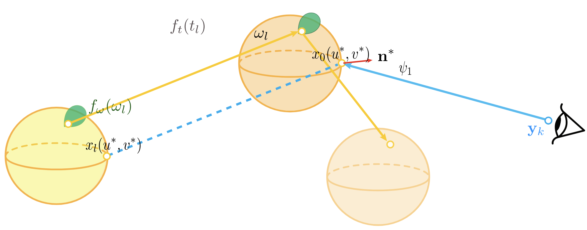
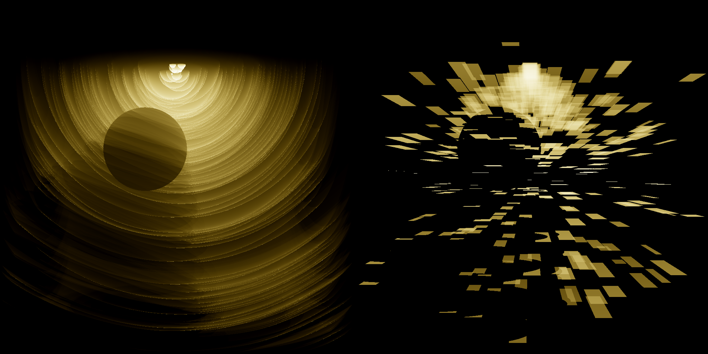

Photon Primitives C++
When Path Sampling Becomes Art
This work grew out of research on difficult light transport paths in physically-based rendering. What began as an effort to reason about complex estimators gradually revealed something unexpected: the intermediate geometric structures themselves possess a striking visual presence.
As the system matured, its value became clear beyond its original research motivation. It provides a unified geometric language capable of expressing both new and existing rendering techniques, making estimator design feel less like ad-hoc engineering and more like structured exploration.
This gallery presents those intermediate forms — not as byproducts, but as natural visualizations of the mathematics underlying light transport.
Note: This is a specialized topic in rendering research. I won't dive too deep into technical details — the focus here is on visual and high-level intuition as well as the artistic side of what these estimators produce. I also included some interactive demos to give a better intuition of how the primitives work in action.
What Are These Images?
These images are intermediate states generated by different photon primitive estimators — snapshots of how various rendering techniques within the photon primitive family traverse light-transport space. Images with stronger artifacts were generated using fewer samples, while those that begin to resemble a conventional rendered image used more samples; in practice, this simply means more time, more intermediate results, and an average closer to convergence.
Most images use scenes with participating media (e.g., fog or smoke), though some demonstrate that the approach also applies to scenes without volumetric effects. Many scenes are intentionally simple: some images show the same setup at different sample counts, while others compare different estimators applied to the same scene. The visual variety arises from the choice of photon primitive types and how they are combined.
Some images exhibit clear geometric structure, while others appear dominated by noise. Certain examples use transient (time-resolved) extensions, and others explore differential variants (experimental), where red and blue indicate positive and negative contributions, respectively.
Although many of these images may appear abstract or chaotic, each represents an unbiased statistical estimator. Given sufficient samples, all will converge to the same physically meaningful result — the image that would be observed in that scene under the specified light transport model. That convergence, in itself, is fascinating.
The Core Idea
From Points to Primitives
Here, we give a highly simplified overview of how rendering works in general. Rendering problem is the question of "for a given pixel, what's the color of the light that goes through it towards the eye?". We ask the same question to all the pixels, then we get a complete render.
To know that color, we need to all the possible light that can come from that direction, so this is a problem of integration: solving this analytically - which in general is impractical - would mean integrating over all the possible ways light can end up on that ray towards the eye.
Instead, we rely on sampling: The exact terms we need to sample depends on the setup: without participating media, we only need to sample all the directions: at each step we make a choice: which direction to bounce, then we shoot a new ray and continue (with media, it's more complex, since now the light doesn't guarantee to reach the next surface: it can interact with the media anywhere, so we also need to sample a distance). This process can happen from both directions: from the light source or from the eye.
The Connection Problem
Light paths can be sampled from both the camera and the light source, but they need to meet somewhere. Since a point has zero measure, we traditionally either:
- Connect: Force the subpaths to go towards endpoint of the subpath from opposite site (fails for specular surfaces, since any incoming direction can only be bounced towards one specific outgoing direction)
- Blur: Treat points close enough as if they concided, allowing endpoints to not coincide exactly (biased, meaning the end result will be different from the true solution, which sometimes matters a lot)
Paths sampled from both directions need to meet. Primitives give us a third option beyond direct connection or blurring.
Now consider: instead of making a choice at some step, you sample the whole domain of possibilities. This creates an (infinite) bundle of paths, forming a geometric primitive — a sphere, plane, cone, or other shape that represents all the paths passing through that region. The benefit is that now it has a non-zero measure and you are guaranteed a connection as long as you sample enough.
Our approach does exactly that and more: The basic setup lets at least one side sweep a whole domain of one or more dimensions that are normally sampled — now the endpoint isn't a point anymore, it's a primitive. All we need is to find ways to make the other subpath intersect it.
The flexibility comes from the choice of what dimensions we choose to sweep: to create an intersectable setup, there are countless ways: a ray-surface setup is the most common, which includes sweeping one side on at least two dimensions and the other one dimension: the last distance;
Paths sampled from both directions need to meet. Primitives give us a third option beyond direct connection or blurring. Here are two examples: By sweeping two distance terms, we form a plane; and by sweeping a whole directional term which is also 2D, we form a sphere. Above are the illustrations, and below are what the artifacts would look like. 
Primitive Types & Flexibility
Flexibility: Any Choice Can Become a Primitive
You can basically do anything you want, as long as you follow some simple rules: any choice made during path construction can be turned into a sampling domain, including the light source it self, or the aperture sample from the camera.
Here's an example of using all the sampling dimensions on the light source to form a primitive: this in practice will be placing copies of the light source everywhere (more specifically, placed on the sampled endpoints, and extra terms will appear).
How well does this work? Well, that depends on the setup. One deciding factor is how large the light source is. Here's a quick comparison of this light source estimator (right) vs the photon sphere (left), with the same sample count:
In this setup, since the light source is tiny, this works poorly.
This example above shows another benefit of the framework: geometric reasoning alone can already tell you a lot about how an estimator performs under specific situations.
Basic Geometric Primitives
Each primitive type captures different spatial coherence in light transport. What we use more commonly are primitives constructed using samples we get outside the lightsource.
Sphere: two angles
Plane: two distances

Cone: one angle, one distance
Cylinder: also one angle, one distance
Combining Primitives
We can combine any two primitives. We can even combine a continuum of primitives and analytically create a combined estimator (we will cover how combinations works in detail later):
Arbitrarily oriented planes, analytically MISed—demonstrating the framework's compositional flexibility.
Higher Dimensional Primitives
As you might notice, even two dimensions of the same type can produce different primitives, and we're also not limited to two dimensions either: we can create 3D or even 4D and higher-dimensional primitives.
Examples of 3D primitives. In general, higher dimensional primitives have much better per-primitive performance, but each primitive is also much more expensive to evaluate computation-wise.
High-dimensional primitives are easy to construct, but the evaluation can become hard: since now the interesection is not on finite number of points anymore, instead, it's a line segment or more complex geometric shape, which would by itself require extra samples to evaluate stoahastically, since analytically integrating that is impractical.
A 2D-2D connection is non-trivial due to the same reason, and implementation wise, 2D+1D from the photon/sensor subpaths is the simplest.
Two Flavors, Two Aesthetics
Another important point is that any primitive can also be used in two ways: correlated and uncorrelated. The difference is in how the sampling peocedure works: do you store subpath and reuse them or not. The results are statistically equivalent: they will have the same variance-over-time profile, if one is bad at handling specific light transport, so will the other. But before they converge, the appearance will be completely different.

Each sample creates a fresh primitive. Discard, regenerate, repeat.
→ Subtle artifacts as higher noise in specific regions.
Reuse the same batch of primitives across the entire image. And they are the exact same region where the other will also perform poorly.
→ Bold artifacts: specular-looking primitives, coherent streaks, structured patterns.
Each creates its own aesthetic. A lot of correlated estimators are easily rasterizable.
Combination
To cover full light transport, we often need to combine multiple primitives in multiple ways: they can cover a wider range of paths, and from a sampling perspective, each primitive is a strategy — combining their decision processes can improve performance.
Intuitively, assuming we have 2 strategies to look for something, as long as one of them has a decent chance, using both together will have a decent chance.
The important thing is how to combine them properly: a simple combination of different primitives won't work, instead, we need to introduce a concept called "re-evaluation": a primitive needs to "pretend" it's another one and re-estimate what a shading point should look like.

Different ways to combine primitive strategies. Some are more effective at reducing artifacts and speeding convergence.
MIS: Multiple Importance Sampling
Multiple Importance Sampling (MIS) combining different primitive strategies for robust rendering.
Multiple Importance Sampling (MIS) is an important concept in rendering: from traditional perspective, it's a way to probabilistically combine multiple technique without introducing bias and will require knowing the sampling pdf from each strategy. In our framework, it has a different interpretation: as we already mentioned, "re-evaluating" the shading points and combine the evaluations given by each primitive.
For MIS to work well, we want the stragegies to complemenent each other, meaning if one is bad at specific type of paths, the other should be good at those paths. From the perspective of photon primitives, that translates to "the primitives that behaves the most differently when we change the viewing angle". For instance, a photon sphere will always have a bright rim, while a photon plane's brightness depends on its facing angle, so we have one that never changes and one that always changes as we change the direction of our samples segment, so this combination is guaranteed to work well.
Live Demos
Normally I put live demos right at the top, but for this project, I feel it's more important to first clarify the core ideas. These interactive demonstrations should now make more sense with the context established above.
High-Level Intuitions Recap
Subpath Bundles → Primitives
Each subpath bundle in path tracing corresponds to a geometric primitive. When we sample a direction and trace a ray, the set of all possible endpoints forms a primitive shape — a sphere for uniform angular sampling, a cone for constrained solid angles, a disc for planar intersections.
The Jacobian: Local Density
The Jacobian intuitively accounts for local density or overlapping of samples.
Consider throwing points uniformly on a sphere: at glancing angles where the surface curves away from the view,
points become exceedingly denser in screen space. This is the 1/|N·V| term.
For other surfaces, the same principle applies. The disc, for example, is uniform w.r.t. both R and cos(θ),
giving a weighted primitive even without the normal term (V·N).
The key insight: the Jacobian must match the actual sampling process, or even validation will be wrong.
Cross-Primitive Evaluation
Photon Sphere, re-evaluated as selected primitive. Drag to rotate.
This demo shows what a sphere will look like after re-evaluation as a different primitive: the shape won't change but the shading will. Although cone and disc re-evaluations give seemingly worse results individually, once combined via MIS, they increase efficiency: we eliminated the super bright regions, and yes, this is still unbiased.
3 Planes: MIS Demo
■ ■ ■ Thinner = Brighter (1/|N·V|). Drag to rotate.
Even the same type of primitives can be combined! These planes differ in which specific distance dimensions they sweep. Using 3 different pairs of segments to form planes means their facing directions will likely differ. From any viewing angle, at least one plane will have good performance (parallel to image plane is optimal). Once combined, the result is much more robust and efficient.
1-Bounce Primitive Estimators
Each primitive has a characteristic Jacobian that determines how brightness varies across its surface.
The key factor is 1/|N·V| — the inverse of the dot product between surface normal and view direction.
Bright rim where rays are tangent
Both front + back contribute
Looks the same as the cone, but N has a different meaning here.
Needs to integrate over the whole interesection segment
● Origin → Seg1 → Seg2 (radius R). Drag to rotate.
Another way to see a primitive is from the viewpoint of progressive photon mapping: we add more and more photon points, while also shrinking the blur radius to infinitesimal. In the end, this gives the analytical primitive. As we can see in "Point Approximation" mode, these already look similar to the "Direct Jacobian Evaluation" result (the minor difference is exactly the bias caused by the blur) — if we continue that operation (expensive but doable), it will converge to the primitive.
3-Bounce Primitive: Photon Parallelepiped
With 3 sampled segments, we get a parallelepiped. The Jacobian is 1/|a×b·c| (triple product of segment directions). When segments become coplanar, the volume collapses and brightness explodes.
Transient (Time-Resolved) Extension
Among all the extensions, transient render is the most interesting one. The idea is simple: if we condition on the optical length of a path when we render, then will can keep only light transport within a small time window, allowing visualization of light propagation. We can also shrink the time gate to infinitesimal, which in traditional transient render isn't possible. Now we are in the same situation: creating connections for zero-measure points. Again, we utilize the photon primitve framework to make things intersectable.
As we mentioned, higher dimensional primitives are hard to evaluate, another interesting thing transient render allows is to reduce the dimensionality of primitives that were previously overly complex to evaluate, for example, the 4D photon hyper-volume.
Time-Gating Slices Dimensions
In transient rendering, we simulate light transport over time—capturing ultrafast phenomena at femtosecond scales. The key insight: time gating slices a high-dimensional primitive and reduces its dimension by 1.
Three distance terms produces a volume; time gating reduces the dimensionality to two.
→ 2D primitives are in general much easier to handle.
Four distance terms produces a hyper-volume; time gating reduces the dimensionality to three.
→ 4D → 3D turns the computational-wise impractical primitive into one that's much more practical (tested during research).
More Time-Sliced Primitives
Time-sliced sphere
Time-sliced volume
Transient photon ellipsoid
Transient plane
Beyond Performance
A New Geometric Perspective
Beyond efficiency gains, this framework introduces an intuitive geometric viewpoint for reasoning about light transport. Concepts that were once abstract become visual and tangible:
- Sampling strategies become geometric shapes you can see and manipulate
- Combining strategies becomes combining primitives with complementary behaviors under change of viewpoint
- When something works well/badly becomes visible through Jacobian shading
- Developing new strategies becomes systematic: imagine a shape, implement it, then reason about what strategy it corresponds to
This also bridges rasterization and ray tracing conceptually — both can be understood through the lens of geometric primitives and their intersections with scene geometry.
The project is intuitive and visual, rendering complex theory accessible without misrepresenting it. While Jacobians often remain nontrivial and we can't assume the estimator we create is easy to evaluate, the system reaches the furthest point at which the theory can be simplified without losing fidelity.
From the Perspective of Art
While the research goal is efficiency and correctness, these intermediate states have aesthetic value independent of their convergence properties. Correlated estimators give rise to distinctive visual styles — structured patterns, specular-like artifacts, coherent streaks; whereas uncorrelated estimators yield subtler, less intrusive forms of stylization.
Future work includes exploring the potential of this framework in non-photorealistic rendering (NPR) and stylized interactive systems.
For full technical details, see the paper: Photon Surfaces for Robust, Unbiased Volumetric Density Estimation (SIGGRAPH 2019) and the follow-up: Photon Surfaces for Robust, Unbiased Volumetric Density Estimation (EGSR 2022)